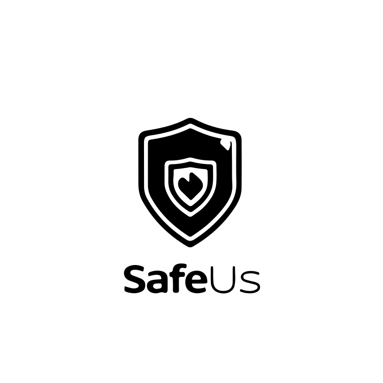

About Me
I’m a Cyber Security graduate from Macquarie University with a strong focus on IT Support and Help Desk roles. I bring hands-on experience supporting users, systems, and workflows in fast-paced environments, combined with a strong foundation in Microsoft 365 and Azure.
Certified in Microsoft Azure Fundamentals (AZ-900) and Microsoft 365 Fundamentals (MS-900), with practical exposure to Microsoft 365 workflows and cloud fundamentals.
I was promoted to Customer Service Supervisor at Coles after consistently supporting high customer volumes, resolving incidents, and coaching new staff. This role strengthened my ability to stay calm under pressure, document issues accurately, and escalate when required.
During my Data Privacy & Security Research Internship, I worked on privacy-preserving data systems, producing technical documentation and evaluating trade-offs between data security and usability. I’m now focused on building a career in IT support where reliability, communication, and problem-solving matter.
Skills & Technologies
Projects

SafeUS Mobile App (Macquarie University)
A Flutter-based mobile application that allows users to submit incident reports with photos and location data. The project focused on building a reliable user interface and integrating Firebase authentication and cloud storage for secure, multi-user data submission.
SecureLink PPRL Platform (Macquarie University)
A privacy-preserving record linkage platform developed as part of a university security project. I integrated an XGBoost model into a dashboard to analyze how privacy controls (LDP and Bloom Filters) impact data matching accuracy, producing documented evaluation results.